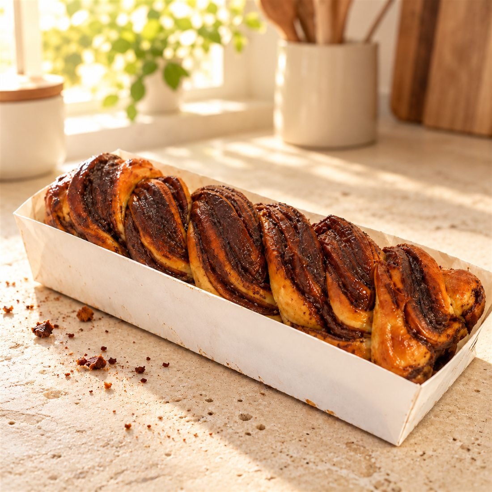
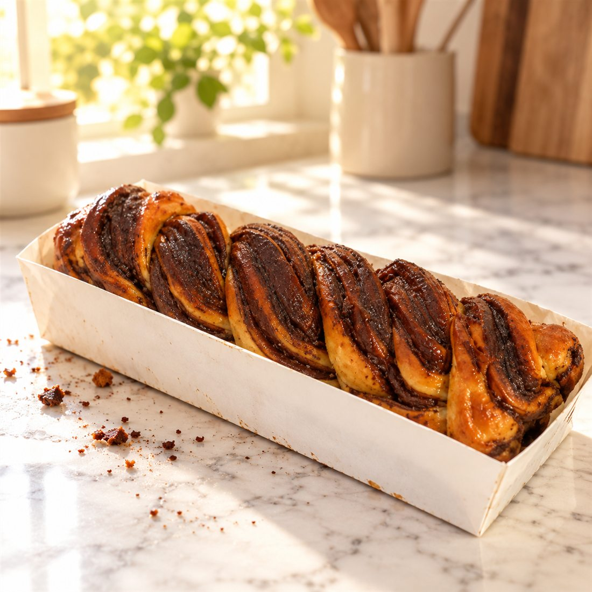
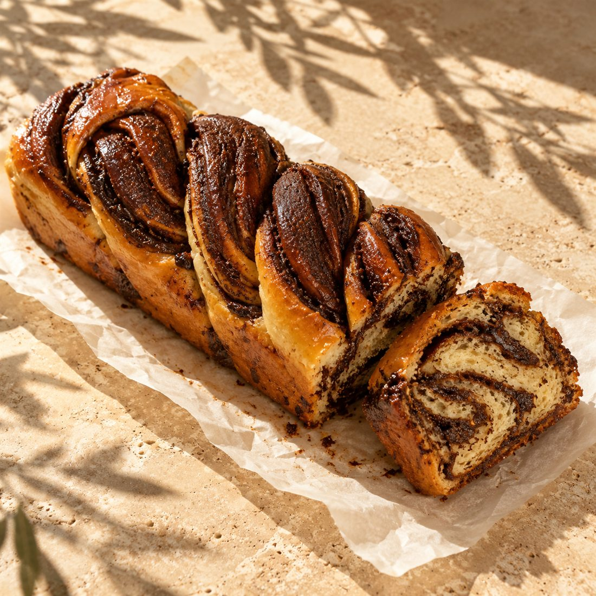
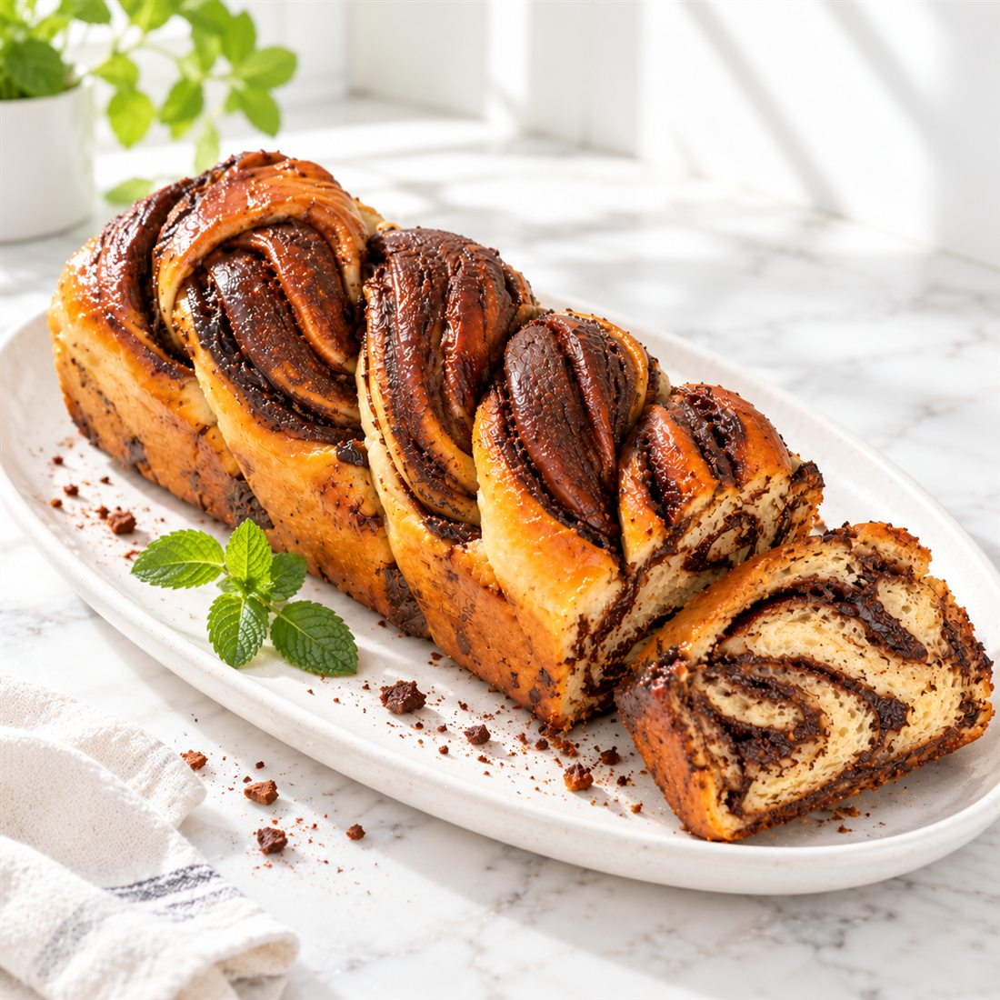
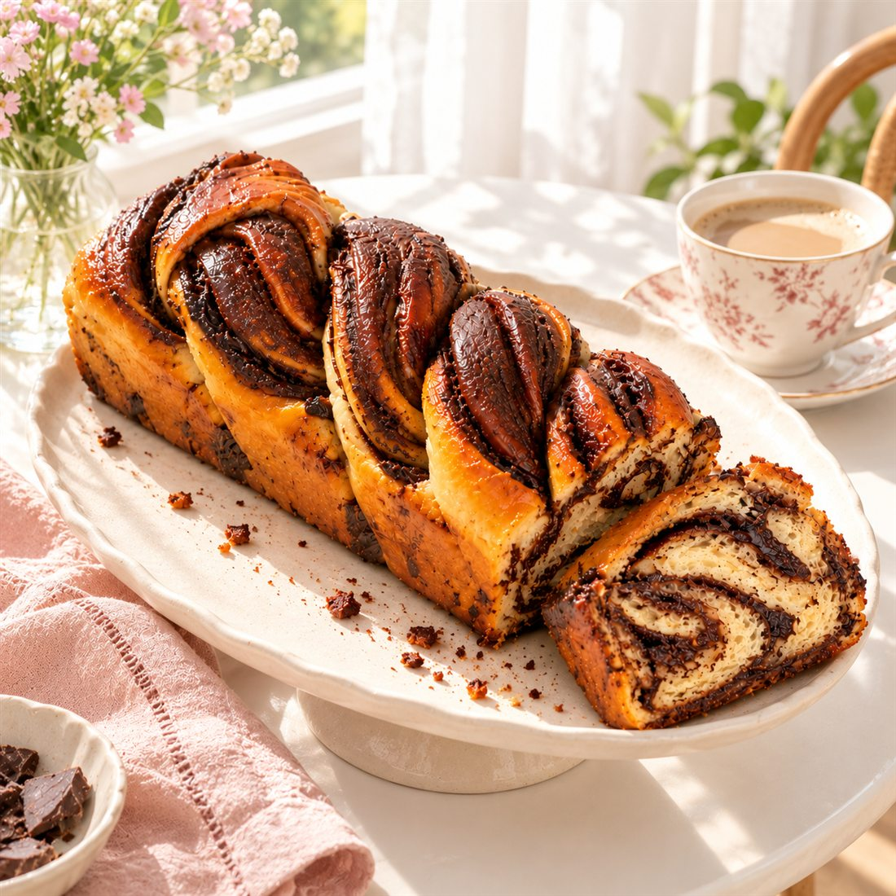
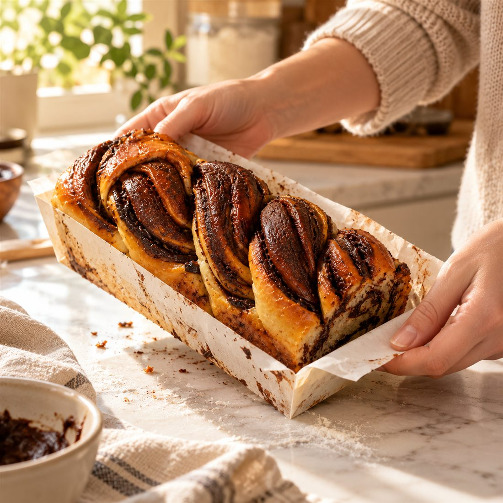
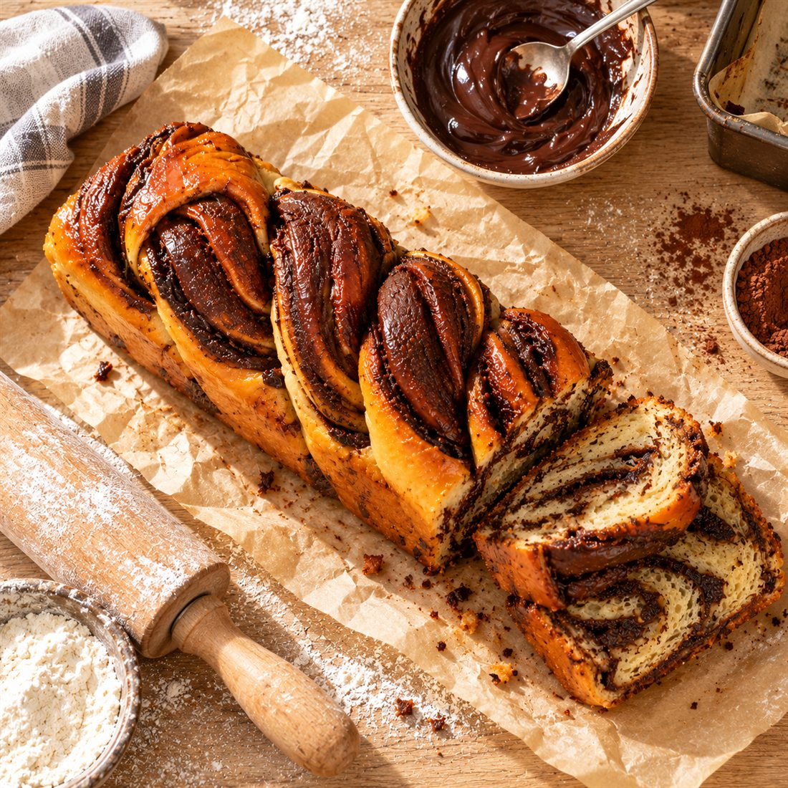

סגנונות צילום בהירים, לבחירה
אותה עוגת שמרים של לירון בחמישה סגנונות בהירים. העוגה נשארה כמו בצילום המקורי, ורק הסצנה משתנה. בוחרים אחד, וכל שאר התמונות באתר ייוצרו בו.

הצילום המקורי
חדש: השילוב שביקשת
הגוונים של המטבח הבהיר, בלי ידיים, והעוגה בתבנית הנייר, כמו שהלקוחות מקבלים אותה.

אותה סצנה, ובמקום השיש משטח אבן טבעית מט בגוון חול, עם מרקם ונקבוביות קטנות.

אור בוקר מהחלון, שיש לבן ופירורים. בלי ידיים ובלי בדים.
הסגנונות מהסבב הקודם

אבן בהירה, אור שמש חזק וצללים של עלי זית. אופנתי ומגזיני.

שיש לבן, צלחת לבנה ואור רך. נקי, טרי ומאוורר.

שולחן קפה, פרחים וגוונים של שמנת וורוד. חם ומזמין.

רגע אמיתי: מוציאים את העוגה מהתבנית. ביתי ואישי.

נייר אפייה, מערוך וקערת ממרח. כמו ספר מתכונים.